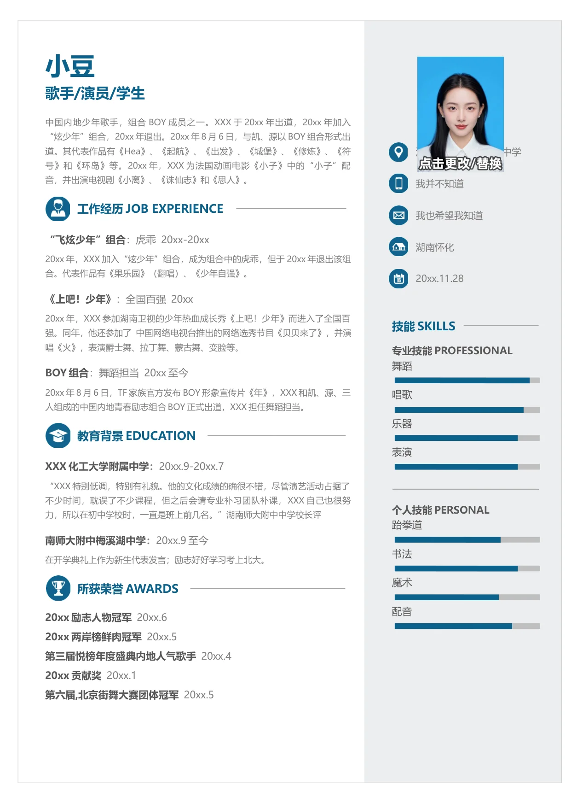

小豆
歌手/演员/学生
中国内地少年歌手，组合BOY 成员之一。XXX 于20xx 年出道，20xx 年加入
“炫少年”组合，20xx 年退出。20xx 年8 月6 日，与凯、源以BOY 组合形式出
道。其代表作品有《Hea》、《起航》、《出发》、《城堡》、《修炼》、《符
号》和《环岛》等。20xx 年，XXX 为法国动画电影《小子》中的“小子”配
音，并出演电视剧《小离》、《诛仙志》和《思人》。
工作经历JOB EXPERIENCE
“飞炫少年”组合
：虎乖 20xx-20xx
20xx 年，XXX 加入“炫少年”组合，成为组合中的虎乖，但于20xx 年退出该组
合。代表作品有《果乐园》（翻唱）、《少年自强》。
《上吧！少年》
：全国百强 20xx
20xx 年，XXX 参加湖南卫视的少年热血成长秀《上吧！少年》而进入了全国百
强。同年，他还参加了 中国网络电视台推出的网络选秀节目《贝贝来了》，并演
唱《火》，表演爵士舞、拉丁舞、蒙古舞、变脸等。
BOY 组合
：舞蹈担当 20xx 至今
20xx 年8 月6 日，TF 家族官方发布BOY 形象宣传片《年》，XXX 和凯、源、三
人组成的中国内地青春励志组合BOY 正式出道，XXX 担任舞蹈担当。
教育背景EDUCATION
XXX 化工大学附属中学
：
20xx.9-20xx.7
“XXX 特别低调，特别有礼貌。他的文化成绩的确很不错，尽管演艺活动占据了
不少时间，耽误了不少课程，但之后会请专业补习团队补课，XXX 自己也很努
力，所以在初中学校时，一直是班上前几名。”湖南师大附中中学校长评
南师大附中梅溪湖中学
：
20xx.9 至今
在开学典礼上作为新生代表发言；励志好好学习考上北大。
所获荣誉AWARDS
20xx 励志人物冠军
20xx.6
20xx 两岸榜鲜肉冠军
20xx.5
第三届悦榜年度盛典内地人气歌手
20xx.4
20xx 贡献奖
20xx.1
第六届,北京街舞大赛团体冠军
20xx.5
湖
中学
我并不知道
我也希望我知道
湖南怀化
20xx.11.28
技能SKILLS
专业技能PROFESSIONAL
舞蹈
唱歌
乐器
表演
个人技能PERSONAL
跆拳道
书法
魔术
配音